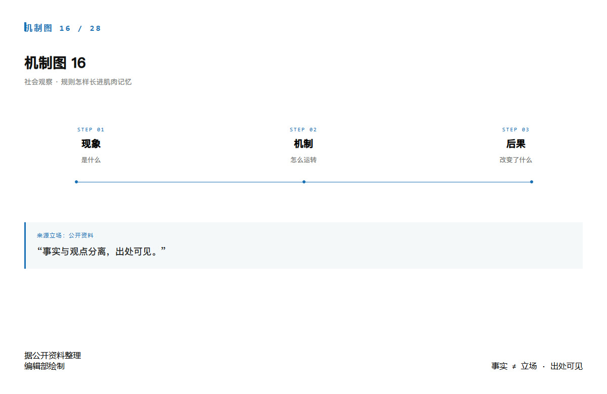

发帖前，你先想的是会不会爆
社会观察 · 规则怎样长进肌肉记忆
一句话打完了，手指停在发送键上。你盯着那行字看了三秒，把「我觉得」删掉，换成「很多人都说」，又觉得不够，再补一句「没有针对谁」。最后你按了删除，什么也没发。
下面写的不是某个具体事件的复盘，是一种普遍动作的归纳。依据来自公开报道、行业分析和网上的公共语料；不指向任何群体，也不替任何立场说话。你未必认，但这些动作你大概都做过。
你以为你在自由表达。其实你先做了一遍风险评估：这句话发出去，会引来什么人，会被截成什么样，会不会让原本想说的事更说不清。评估完，很多话就不说了。
四因子排序把互动写进权重之后，发帖就不再是零成本的动作。你写的每一句都可能被计价、被转发、被脱离上下文。于是动作顺序变了：先想后果，再决定要不要想清楚。
这套预期有三副面孔。发帖前先想「这个会不会爆」；争论时先估「我这边人多不多」；写澄清时先怕「会不会被冲」。三句话都不是谁教的，是看会了的。
我看过一条评论，打了一大段，最后只留下一句「算了，不说了」。那四个字比前面的大段都真实。它不是懒，是算完账之后的选择。
规则从来不靠宣讲普及，它靠结果自我教育。你看到一个人把事实摆得很齐，还是被骂到删号；看到一句短而狠的话拿到几万赞。看几次，手就学会了该怎么写。
头部账号的一次转发，顶得上普通用户几万次点赞——这是行业里通行的观察，不是精确统计。当一个普通人发现自己的声援只是给别人的动员能力添砖，他以后会更谨慎。
于是立场先于事实，姿态先于证据。先站好队的人有同伴，先摆事实的人常常孤零零。这不是谁道德差，是计价系统给前者的回报更高，高到一眼就看得见。
📌 一个值得记住的判断
真正的规则，不是公告里写的那套，是你动手前脑子里自动跑的那遍。它不写在任何地方，却管住了绝大多数人。
它长在措辞里。「我觉得」变成「大家都这么认为」，用多数给自己垫背；「可能不对」被删掉，因为犹豫会降低战斗力；事实陈述后面加一句态度表态，免得被说立场可疑。
它也长在沉默里。一个议题下面一百条激烈评论，背后可能是一百个愤怒的人，也可能是九百个关掉页面的人。退出的人不产生数据，算法和旁人都读不到他们。
澄清贴写得比指控贴还小心：先声明无意冒犯，再逐条对齐来源，最后还得留一句「欢迎指正」。明明是被冤枉的一方，说话却像在申请批准。
网络公共语料中的一句常见说法
「发帖前先想，这个会不会爆。」
一句半开玩笑的话，成了很多人真实的动作。出处不可考，作语言标本引用，不指向具体的人或事件。

▲ 一条帖子发出前，脑子里跑的那几步（编辑部绘制）
肌肉记忆不是天生的，是可以松动的。松动的前提不是喊一句「大家别怕」，而是让人算得清：这句话发出去，规则会怎么对待它。算得清，风险评估才有对错，不然就只能靠猜。
可谈的方向是让规则可解释。比如公开处置的类型和数量，说明什么样的内容被限、为什么被限。透明一点，那套自动跑的筛子才有机会从「怕」变回「判断」。场景很小，但真实。
✍️ 你上一次删掉已经打好的评论，是因为什么？
是怕被冲，还是觉得说了也没用？评论区说说。觉得有用，点个赞、点个「在看」，转给那个总在删评论的人。
下一篇：小红书把算法写成了一张价目表，争议被明码标价。
参考
四因子排序、互动权重与话题因子，据公开行业分析；头部节点互动放大效应为网络结构的通行观察，非精确统计。
行为预期的描述据网络公共语料观察，属方向性归纳，非统计结论。「肌肉记忆」「风险评估」为分析性说法，非心理学诊断。
社会观察，不站任何性别立场。批评的是分发结构，不是任何群体。事实据公开来源，未证实指控不转述、不评价。拆解规则是为了理解，不是行动指南。